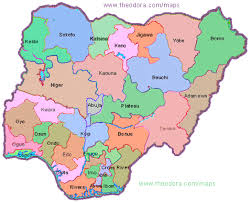

Hausa people make up 29% of Nigeria
Hausa people make up 29% of Nigeria
Nigeria is a country in West Africa. There are many tribes Nigeria and they are all diverse. The most popular tribes are Hausa, Yoruba and Igbo but there are many more.
Nigeria is mostly seperated into about 3 regions. They are divided into the North, West, and East.
Hausa people make up 29% of Nigeria
 Yoruba people make up 21% of Nigeria
Yoruba people make up 21% of Nigeria
 Igbo people make up 18% of Nigeria
Igbo people make up 18% of Nigeria
The 32% left is made up of many different groups like Ijaw, Tiv and etc.
Here is a map of Nigeria 